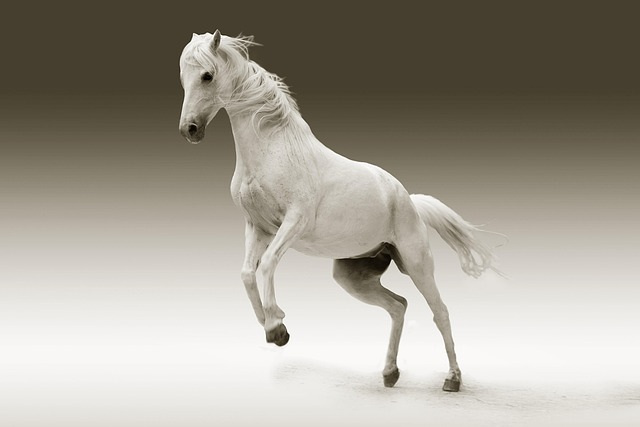

You grab a torch and the goblins see this werid burning light on a stick and get curious. One of the goblins gets close and you wave it by them they get more scared. You keep your tourch in hand and keeping the fire going your able to keep the goblins at bay till dawn, when a lick on your face wakes you up.who might it be ? 3 knights have brought your horse to you and bring you to a town.
